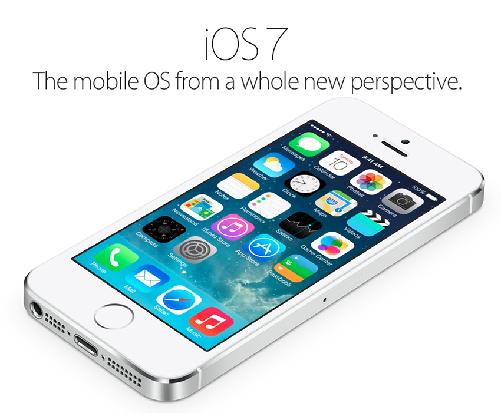

Gerenciamento de processos - iOS
Carla, Graziele, Kather, Lucas

Introdução
Anunciado em 2007
Inicialmente chamado de iPhone OS
Revelado em 2007
Usa o XNU Kernel (X is not Unix)
Objective C, C e C++
Detalhes técnicos